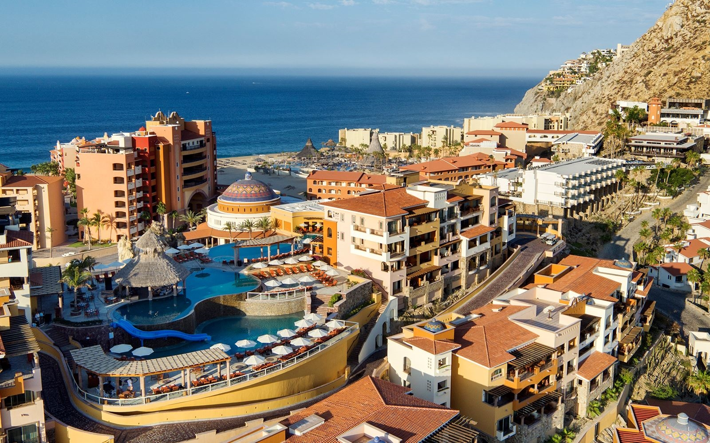

Cabo San Lucas Resorts
 Contents
Contents
- Sol Mar Beach Club Resort (#2353) - 200 rooms
- I had room 1604 which was destroyed along with the original Solmar Hotel to build the Grand Solmar Land's End Resort.
- Grand Solmar Land's End Resort - 248 rooms
- I had room 6804 for the end of the room 1604 contract.
- Playa Grande Resort - 260 rooms
- 3101 is closest to the Ridge Infinity Pool and 3124 is my regular room.
- Finisterra - 272 rooms
- The Resort at Pedregal - 66-rooms
- Terra Sol
Cabo Villas
Log
- Published Page location: http://cabo.lam1.us/Resorts
- Thursday, June 18, 2020 @ 3:06:35 PM (Alaska Time) - Added Cabo Villas
- I got an email with two big jpg images that could be the front and back of a flyer. Cabo Villas has been around for a long time and is one of the hardest sell timeshare tour experiences from my experience. They have expanded to new towers covering the back of the block they are in. The resort is a similar distance from downtown as the Solmar resorts and way closer to the crowded public beach if you want that but the beach area reserved for the resort can be very crowded.
- Sunday, October 29, 2017 @ 6:51:18 PM (Alaska Time) - Updated this page
- 25 years ago the Solmar Hotel, Solmar Beach Club, and Terra Sol were the only things on the beach south of the arch. There was also the Hotel Finisterra on the ridge above the beach and the grand total of all the rooms of all these was maybe 200 rooms. Today the Grand Solmar, Solmar Beach Club, Playa Grande, Finisterra, and the newest The Resort at Pedregal have over 1,000 rooms many of which are actually 2 bedroom and larger suites.
 Top of this document
Top of this document
{kind=link}
{kind=link}